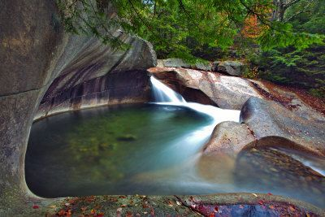
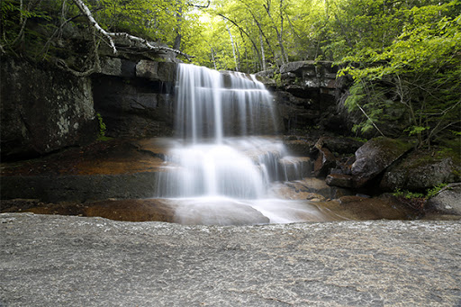
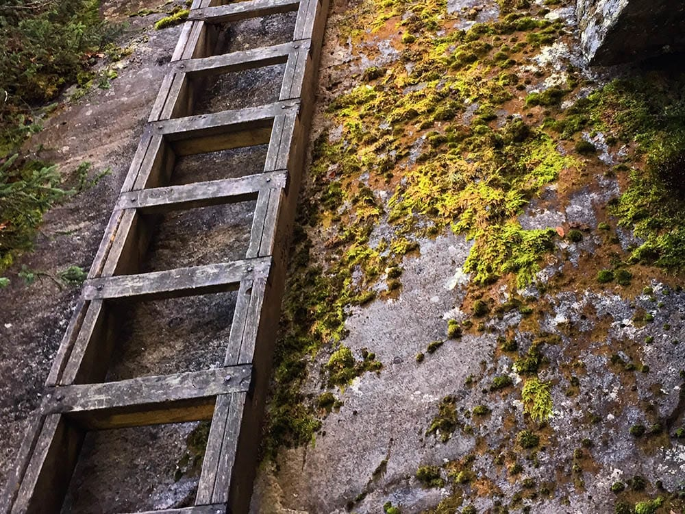
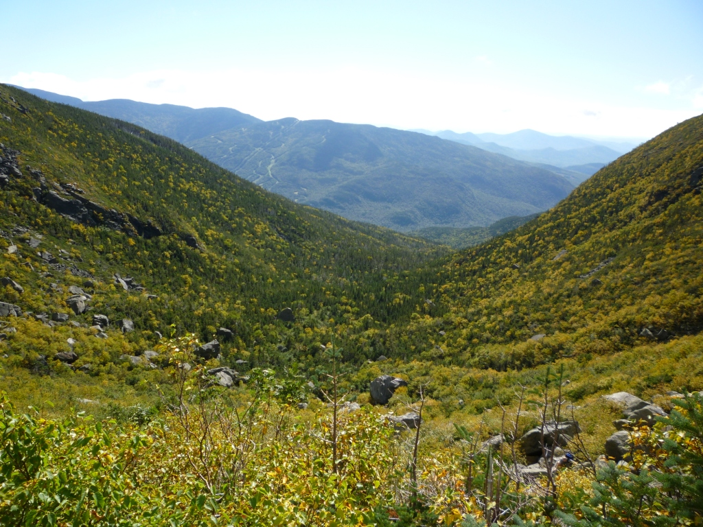
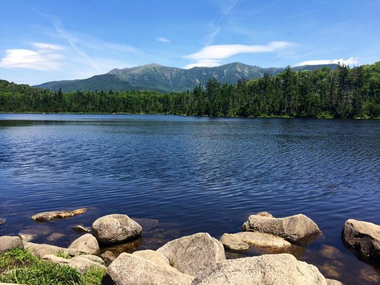
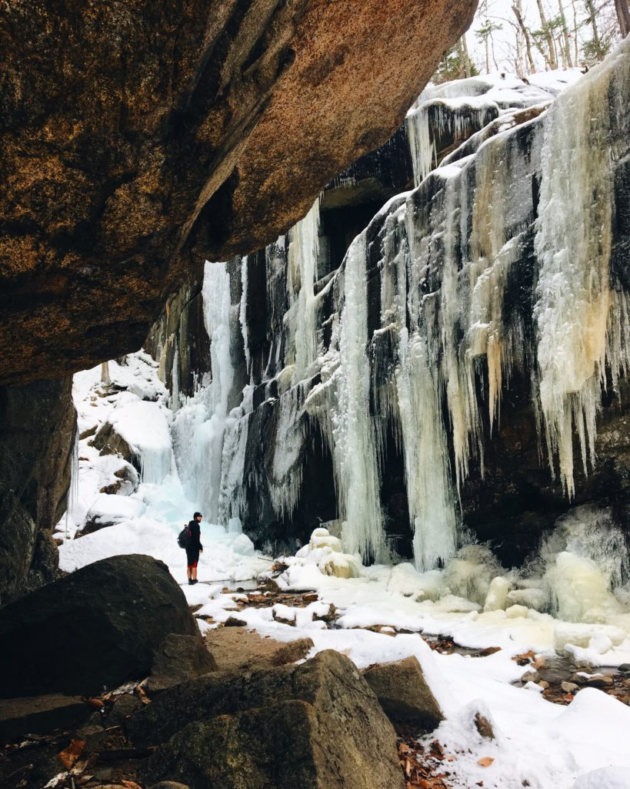
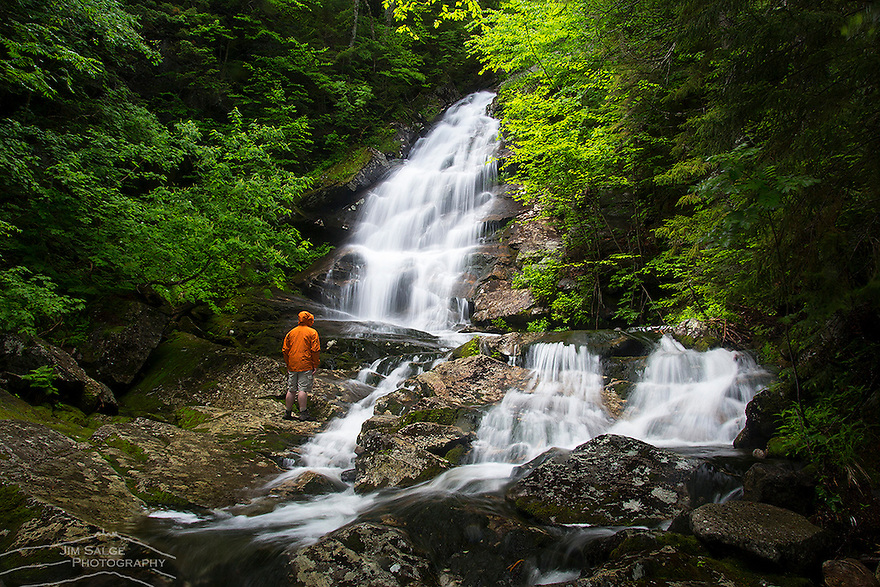
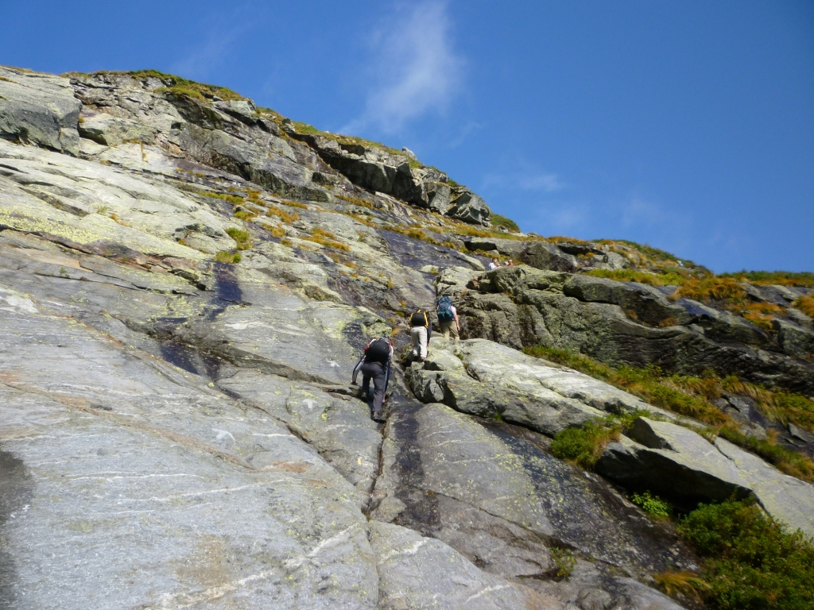

NH Hikes
New Hampshire is home to the White Mountains, a range parented by the Appalachian Mountains. They are the most rugged mountains in New England, and are therefore an enticing attraction for hikers near and far. New Hampshire boasts hikes for all ages and skill-levels, many of which are accessible year-round. Enjoy the natural swimming holes in summer, the unparalleled vibrant foliage in autumn, snowy wonderlands in winter, and wild alpine blooms in spring. Here are four of the best New Hampshire trails for the beginner and the experienced hiker, and everyone in between:
   Lonesome Lake via Cascade Brook Trail
Easy

Length: 4.9 mi
Elevation Gain: 1,250 ft
Trailhead: The Basin off Rt. I-93, Lincoln, NH
Located in Franconia Notch of the New Hampshire White Mountains, this easy, five mile hike offers fun for the whole family. Begin your hike with the stunning natural phenomenon that is The Basin, a waterfall emptying into a 20ft wide
granite pothole believed to have been eroded 15,000 years ago. Enjoy hiking next to cascade covered rock up to Lonesome Lake, where you may enjoy an additional three mile loop taking in the views of Franconia Ridge,
or bask in the sun with a picnic on the beach before your descent. Consider packing a bathing suit or wearing clothes that can get wet, so you can jump in the swimming holes along the way!
Mount Chocorua via Champney Brook Trail
Intermediate

Length: 7.3 mi
Elevation Gain: 2,300 ft
Trailhead: Approx 10 mi west of Rt. 16 on the Kancamagus Highway (Rt. 112), NH
Champney Brook Trail is one of the most popular routes up Mount Chocorua due to its beautiful cascades. This trail is a primary winter route, allowing access during all seasons. About 2 to 3.5 hours each way, depending on speed and
conditions, the trail will lead you to a bald summit with views of Mount Washington and the rest of the White Mountains. Stop at the Rocky George Scenic area for more views on your drive home.
Mount Moosilauke via Beaver Brooke Trail
Difficult

Length: 7.6 mi
Elevation Gain: 3,126 ft
Trailhead: Kinsman Notch Rt 112, N Woodstock, NH
If you’re looking to check off another NH 4,000 footer, Mount Moosilauke will not disappoint. The summit is above tree-line, offering 360 views of New
Hampshire’s White Mountains, including Franconia Ridge and the Kinsmans, Jobildunc Ravine, and Vermont’s Green Mountains. This is a very steep, waterfall-lined trail with some of the steepest sections offering bolted wooden blocks for
aid. This trail is best March through October and is not recommended if it’s raining. If you are interested in adding an overnight adventure to your hiking experience, camping is encouraged and shelter is available as you summit the
highly acclaimed Mount Moosilauke.
Mount Washington via Huntington Ravine Trail
Extreme

Length: 3.8 mi
Elevation Gain: 4,271 ft
Tailhead: 361 Rt. 16, Jackson, NH
This ever-elusive trail is only passable by hikers a few months out of the year, and is known to be the most difficult regular hiking trail in New Hampshire. This trail should only be attempted by advanced hikers with scrambling
experience and technical gear, and it should never be descended. It is generally only ice-free July to September, and even that can be a gamble, so pay close attention to the weather. The labor will pay off as you notice the wild alpine
flowers and the breathtaking views.